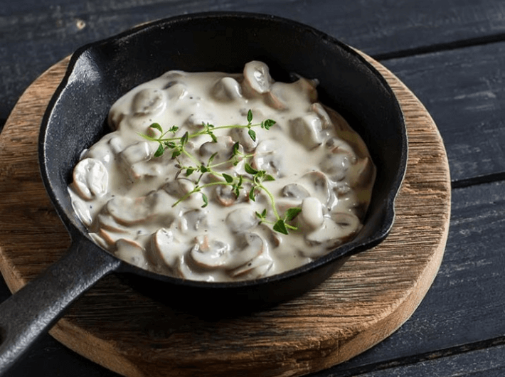

Pilzpfanne mit Rahmsauce (V)
(15 Min., 1 Port., F: 39 g, KH 11 g, E: 10 g)

Zutaten
- 250 g Champignons, 100 g Schlagsahne 30%, 10 g Butter, 2 Zehen Knoblauch, Salz & Pfeffer, 1 Prise Muskatnuss, 1 Schalotte/n, 1 Stängel frischer Oregano
Vorbereitung
- Champignons putzen, falls notwendig mit einer Bürste abbürsten, dann die trockenen Stielenden abschneiden
- Pilze in Scheiben schneiden
- Knoblauch schälen und in feine Scheiben schneiden.
- Schalotte schälen und in fein würfeln
- Oregano waschen und trocken schütteln
Braten
- Butter in der Pfanne erhitzen und die Schalotte mit Knoblauch andünsten
- Champignons dazugeben und alles rundum für wenige Minuten braten
- Sahne dazugeben und alles mit Salz, Pfeffer und frisch geriebener Muskatnuss würzen
Originalrezept unter: Lowcarbrezepte.org